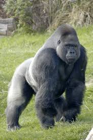

- Los gorilas (género Gorilla) son los primates vivos más grandes del planeta. Estos majestuosos mamíferos son herbívoros, habitan en los bosques tropicales de África central y se dividen en dos especies principales: el gorila occidental (Gorilla gorilla) y el gorila oriental Características Principales • Tamaño y peso: Un macho adulto promedio pesa entre 140 y 180 kg (algunos superan los 200 kg) y mide alrededor de 1.70 a 1.90 metros de altura. Las hembras son notablemente más pequeñas, pesando alrededor de la mitad. • Estructura social: Viven en grupos familiares o "tropas" de entre 5 y 30 individuos. Cada grupo está estrictamente liderado por un macho dominante maduro conocido como espalda plateada, llamado así por el pelaje grisáceo que desarrolla en su lomo al envejecer. • Fuerza y temperamento: Poseen una fuerza física descomunal, estimada en hasta 4 a 9 veces la de un ser humano. A pesar de esto, son animales sorprendentemente pacíficos y gentiles que evitan los conflictos físicos usando demostraciones de poder como vocalizaciones y golpes en el pecho. • Cercanía genética: Comparten aproximadamente el 98.3% de su ADN con los humanos, lo que los convierte en uno de nuestros parientes evolutivos más cercanos después de los chimpancés y bonobos. Demuestran una alta inteligencia, uso de herramientas en libertad y complejas emociones como el duelo.